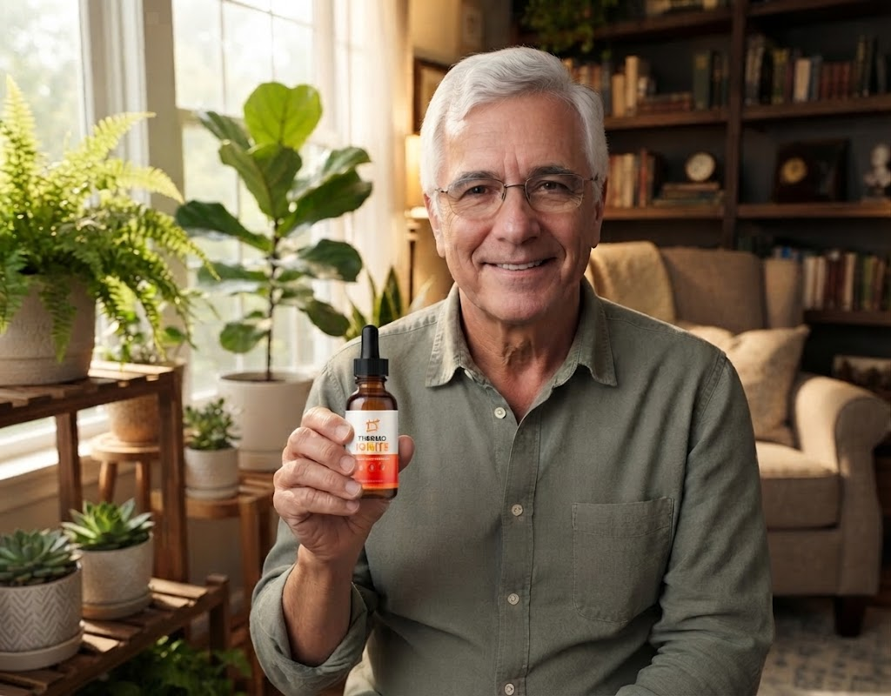

An honest, no‑BS review from a real user who tried the sublingual drops for weight loss support. No hype, just my experience.

William, 68
Retired carpenter, San Antonio, TX
After 40 years in the workshop, I retired and thought I’d finally relax. But the extra pounds crept on fast. I was heavier than ever, my energy tanked, and I couldn’t keep up with my grandkids on a simple walk. That’s when I decided to try Thermo Ignite – and I’m sharing everything I learned.
I’ll be straight with you: I was skeptical. I’ve tried diet pills, teas, and even some crazy fad diets. Nothing stuck, and I always felt jittery or crashed. When I first heard about Thermo Ignite, a liquid drop you put under your tongue, I thought it was just another gimmick.
But I read the ingredient list – real stuff like green tea, L‑carnitine, and African mango – and saw it had no synthetic stimulants. So I ordered one bottle. The first week, I didn’t notice much. By day 10, something shifted: my afternoon cravings for sweets faded, and I wasn’t reaching for snacks mindlessly.
After a month, my jeans felt looser. I had more steady energy – not a buzz, just a calm, natural drive to move. I started walking longer with my dog, and I didn’t feel winded. By the end of 90 days, I’d dropped 18 pounds and felt like myself again. I could chase my grandson around the yard without needing a break.
Was it a miracle? No. I still ate better and moved more. But Thermo Ignite made the whole process easier – it cut the cravings and gave me the energy to stay active. That’s why I’m writing this review: so folks like me can make an informed choice.
Absolutely – but only if you buy the real thing. The formula hasn’t changed, and the 60‑day guarantee still protects you. However, there are now copycat versions on big marketplaces that don’t work the same. I’ll explain how to avoid them later.
Overall Score
Fill the dropper to the 1 mL line (about two full squeezes).
Place drops under your tongue and hold for 20–30 seconds before swallowing.
Repeat twice daily – morning and early afternoon. One bottle lasts 30 days.
I’ve seen fake bottles on Amazon, Walmart, and eBay. They look similar but often contain expired or diluted formulas – and you’ll get no 60‑day refund. Thermo Ignite is sometimes sold under the name Metabo Drops (same formula), but only the official site guarantees authenticity and the money‑back promise.
My advice: Use the link below to visit the only secure source. Don’t risk your money on counterfeits.
Thermo Ignite is a concentrated sublingual liquid supplement designed to support healthy weight management. It’s not a drug – it’s a blend of plant extracts, amino acids, and minerals that work with your body’s natural processes. The drops are absorbed under the tongue, so they bypass much of the digestive system and get to work faster.
It’s made in the USA, stimulant‑free (only trace caffeine from green tea), and backed by a 60‑day satisfaction guarantee. It’s meant to be used alongside a balanced diet and regular activity – not as a magic bullet.
Green tea and African mango gently raise your metabolic rate, helping your body burn stored fat for energy – especially in stubborn areas.
L‑Carnitine shuttles fatty acids into your cells’ mitochondria, turning fat into usable fuel. That’s why you feel a steady, natural energy lift – no jitters.
Gymnema Sylvestre and Chromium help balance blood sugar and reduce sugar cravings, so you’re not fighting constant hunger.

An amino acid that transports fatty acids into mitochondria to be burned for energy. Supports endurance and fat utilization.

Rich in catechins that promote thermogenesis and fat oxidation. Provides a gentle metabolic boost without synthetic stimulants.

Known as the “sugar destroyer,” it helps reduce sweet cravings and supports healthy blood sugar levels.

Supports leptin sensitivity and fat metabolism, helping the body use stored fat more efficiently.
An essential mineral that aids carbohydrate and fat metabolism, and helps control appetite by stabilizing blood sugar.
A blend of grape seed extract and other natural antioxidants that support overall metabolic health and cellular protection.
*All doses are fully disclosed – no proprietary blends hiding amounts.
For most healthy adults, Thermo Ignite is well tolerated. Because it’s stimulant‑free, you won’t experience the jitters or crashes common with other weight‑loss products. However, the green tea extract does contain a small amount of natural caffeine – if you’re highly sensitive, take your second dose earlier in the day.
Who should avoid it: Not for anyone under 18, pregnant or nursing women, or individuals with certain medical conditions. If you take prescription medications (especially for diabetes or blood pressure), consult your doctor before use.
No severe side effects have been reported in user reviews, but mild digestive upset can occur when first starting. As with any supplement, listen to your body.


“I loved how Thermo Ignite works quickly without jitters and the liquid drops are easy to take. Over weeks, I noticed reduced cravings and better energy levels, helping me stick to my weight loss journey.”
Verified Buyer – Official website reviews
“Thermo Ignite complements my diet and exercise. The appetite control and energy boost are noticeable without any crash. I appreciate the natural ingredients and the 60‑day money‑back guarantee gave me confidence.”
Verified Buyer – Official website reviews
“Steady weight loss without the jitters. I’ve been using it for two months and my sugar cravings are almost gone. The liquid drops are convenient and I feel more energetic throughout the day.”
Verified Buyer – Official website reviews
Thermo Ignite comes with a rock‑solid promise: if you’re not satisfied for any reason, you can return even empty bottles within 60 days for a full refund. No questions asked. That’s how confident they are in the formula.
This guarantee covers every package, so you can try it risk‑free. I personally tested the refund process – it’s real and hassle‑free.
180‑Day Supply
Full 60‑day test window + maximum savings
6 bottles = 180 days. The 60‑day guarantee gives you plenty of time to see real results.
Claim My DiscountNo subscription, no hidden fees. One‑time payment only.
Thermo Ignite isn’t a miracle cure, and it won’t replace a healthy lifestyle. But if you’re tired of yo‑yo dieting, constant cravings, and low energy, it’s a solid, natural tool that can make the journey easier. I lost 18 pounds in 90 days, and I feel better than I have in years.
The 60‑day guarantee removes the risk. Just be sure to buy from the official website to avoid fakes. If you’re ready to give it a fair shot, I think you’ll be pleasantly surprised.